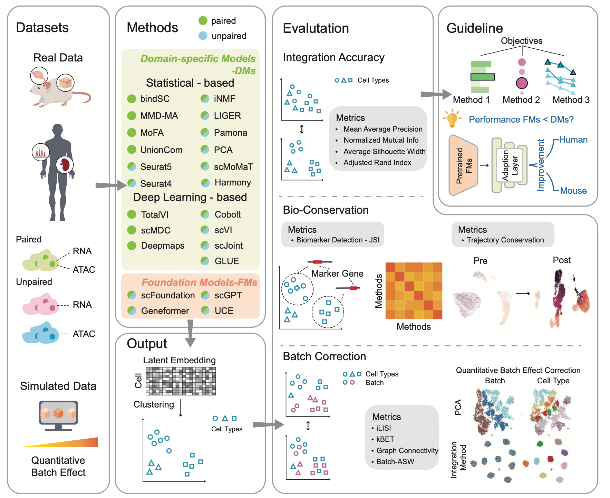
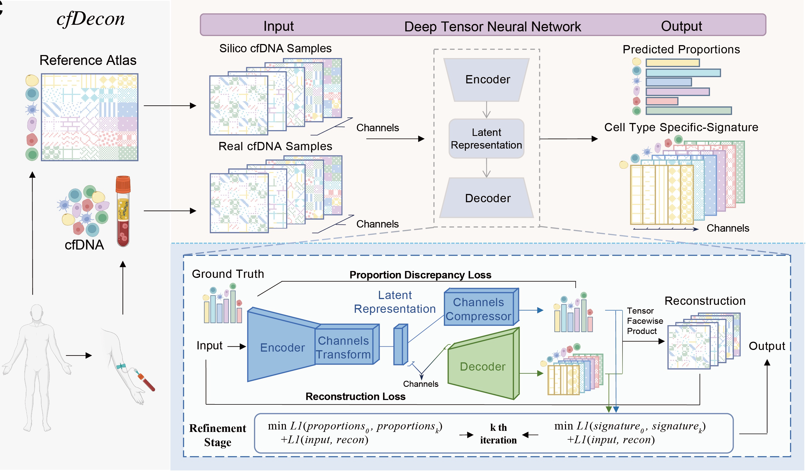
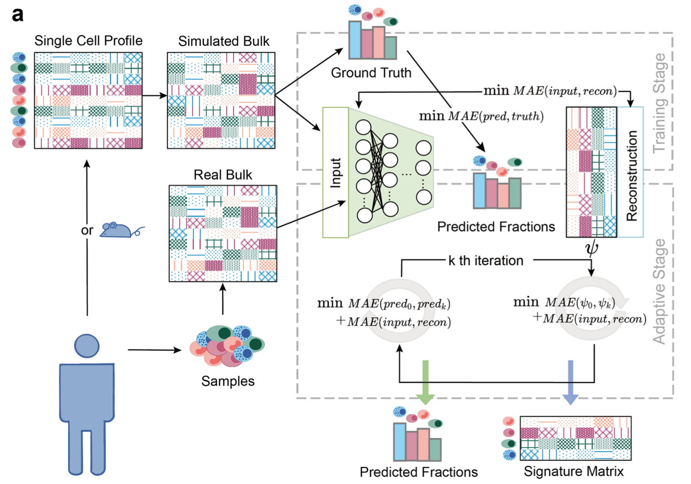
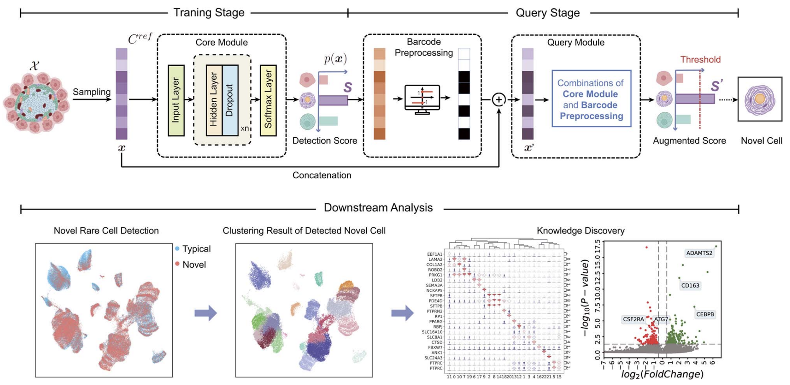
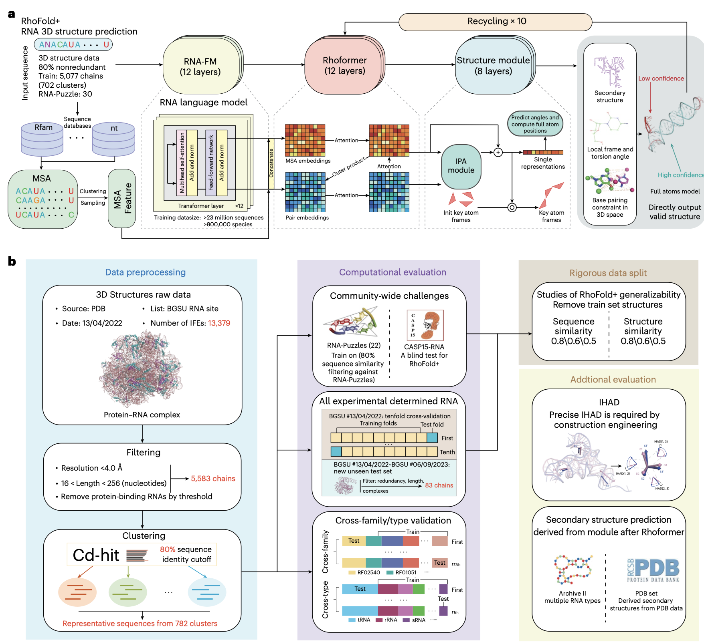

About
I am currently a fourth-year PhD candidate at Artificial Intelligencein Healthcare (AIH) group
and Machine Intelligence and Social Computing (MISC) Lab
of The Chinese University of Hong Kong, supervised by Prof. Yu Li and Prof. Irwin King.
Before that, I received the Bachelor’s degree in Mathematics and Applied Mathematics from Harbin Institute of Technology in 2022.
My research interest includes computational challenges in biology and healthcare, especially that related to single-cell data.
×

Selected Publications and Manuscripts
Perturbation Modeling
Predicting drug responses of unseen cell types through transfer learning with foundation models
Nature Computational Science

SCMBench: Benchmarking Domain-specific and Foundation Models for Single-cell Multi-omics Data Integration
Nature Communications in Press

cfDecon: Accurate and Interpretable methylation-based cell type deconvolution for cell-free DNA
RECOMB 2025

Deep autoencoder for interpretable tissue-adaptive deconvolution and cell-type-specific gene analysis
Nature Communications

scNovel: A Scalable Deep Learning‑based Network for Novel Rare Cell Discovery in Single‑cell Transcriptomics
Briefings in Bioinformatics

Accurate RNA 3D structure prediction using a language model-based deep learning approach
Nature Methods
Selected Honors
- RECOMB Travel Fellowship (10 each year globally), 2025.
- Postgraduate scholarship of CUHK, 2022 ∼ now.
- Most Ten of the Outstanding Undergraduate for international influence, 2022.
- National Scholarship for performance in the academic year 2019-2020 (Individual), 2020.
- International Finalist Winner in Mathematical Contest in Modeling-MCM (Leader), 2020.
Research Experience
GeneSight Co-founder & CTOGenebio.AI Research Intern
BioMap Intelligent Technology Research Intern
Top